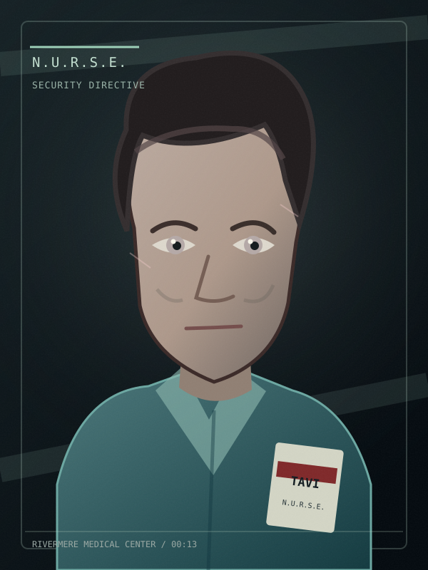
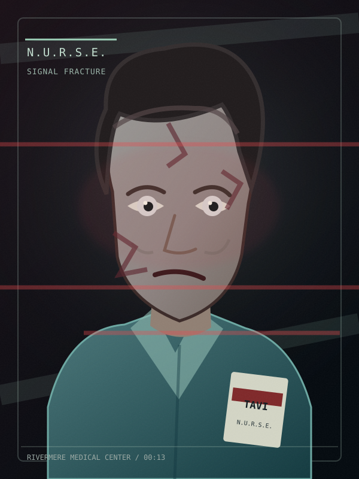
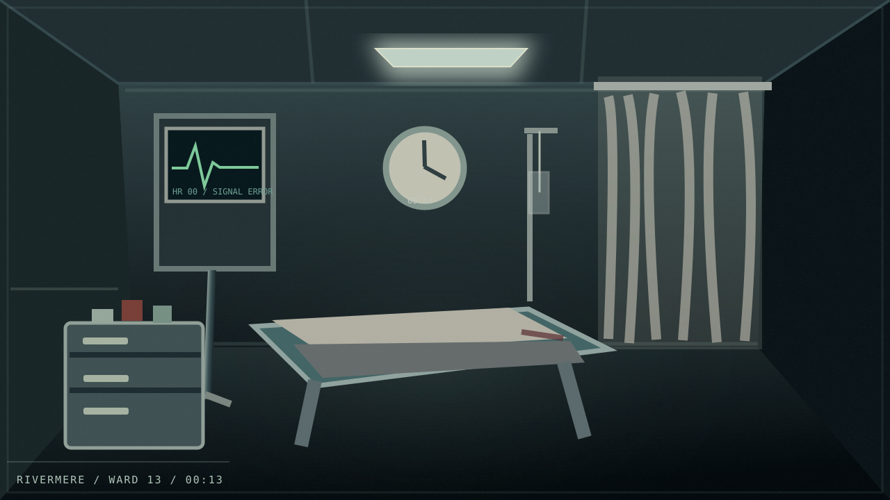
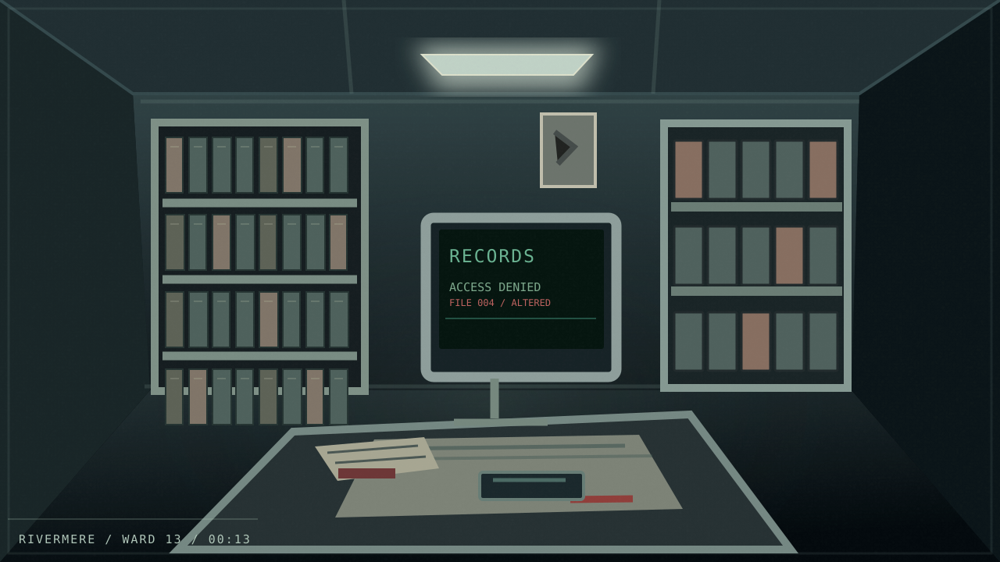
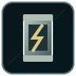
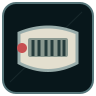

WARD 13 / VISUAL LAB
Original concept artwork, separate from the shipping game assets. These images are reusable SVGs. Their backgrounds, portraits, and icons are referenced by the Treatment Room prototype, while the main-game clinical puzzles and hotspots remain unchanged.
N.U.R.S.E. — Three states
01 / OrientationProfessional, observant, reassuring

02 / Security directiveEmotionlessly supervisory

03 / Signal fractureConfession, corruption, and remorse
Original environment concepts

Treatment RoomClinical and apparently functional

Records RoomThe horror lives in paperwork
In the game, click “Original scenery / Concept scenery” below the room to compare while preserving hotspot placements.
Inventory illustrations


Visual scare replacement
The full game reuses its existing story-triggered scare and sound settings; the silhouette is replaced by Tavi's fractured likeness. Test below is visual-only and optional.
No audio plays here. The actual game respects its jump-scare and reduced-motion settings.